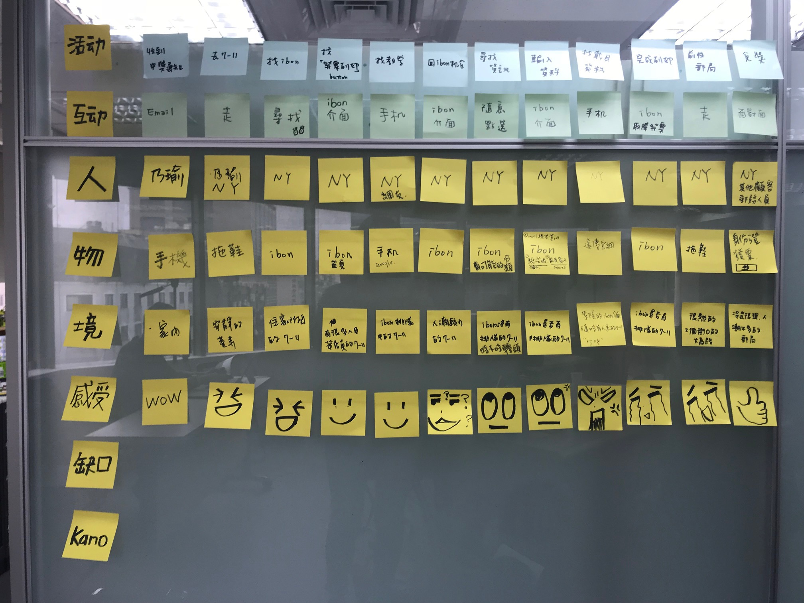

以知名便利商店機台操作為研究
知名電信以E-mail通知客戶電子發票中獎，須前往某S 便利商店使用列印中獎發票，進入商店後在機台前尋 找"發票列印"按鈕遍尋不著又翻了手機的信箱看兌換 教學還是找不到。 最後上網搜尋blog分享，才順利將之印出，總耗時超過30分。
Feb 2018

從顧客旅程中的顧客感受，發掘服務斷點。
1. 機台介面不好搜尋
2. 無列印方法介紹
3. 店員對此的教育訓練不足
4. 列印後兌換發票不便
5. 電子發票推廣仍不夠廣泛
－ 尋找曾使用過的使用者進行訪談，人數約20人
－ 使用六頂思考帽進行分析
1. 電子發票列印教學置於該服務介面選項首頁
2. 嘗試簡化介面點選流程或是提供輸入提示
3. 強化店員的對電子發票兌換的教育訓練
4. 配合政府推廣電子發票及載具儲存，降低人工列印機率
1. 使用自然人電子發票載具儲存，可減少多重帳號載具儲存問題
2. 電子發票流程兌換上需更簡化或是用Qrcode取代
3. 提升民眾對電子發票方便度認知
4. 發票兌換點應增加，而不僅限於郵局(有營業時間限制)
其實電子發票中獎過的人非 常 少
這樣的背景下，能接受訪談的人數並不多，多數人都是使用機台繳水電費及停車費等等，所以廠商對此服務也不是很在意(應該)，其實比起兌換時繁瑣又囉嗦的流程，受訪者更常提到的是使用機台時後方排隊的壓力，一邊找如何兌換，一邊觀察是否有人急著用，最後放棄使用機台，如果能夠讓使用更簡單明瞭，降低使用時間，機台還有更多服務能夠被開發。os：電子發票到底為什麼這麼難中，中了又這麼難領